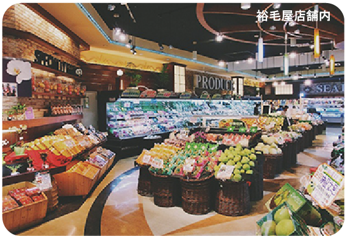
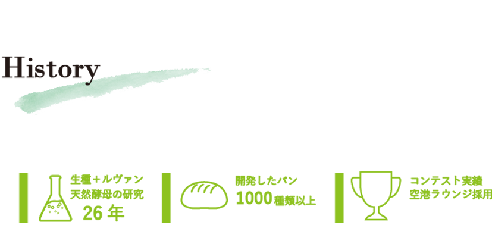
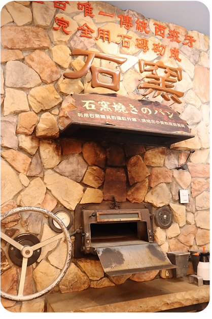
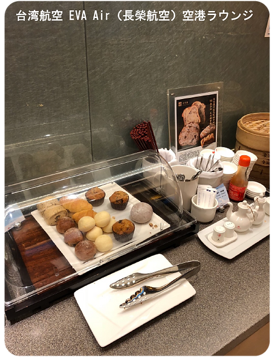
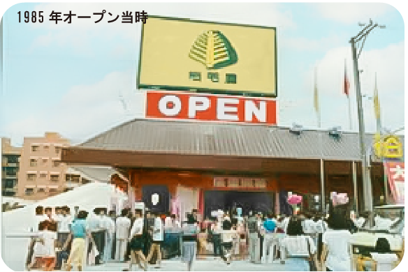

挑戰與美味的開始
自 1985 年在台灣台中市開業以來，高端日本超市裕毛屋一直從日本各地進口優質水果和特色產品，同時秉承「安全可靠」和「盡可能去除添加劑」的原則，開發自己的產品。其中，麵包製作是自公司成立以來一直重點關注的領域。
大約 30 年前，裕毛屋引進一台當時在台灣仍很罕見的西班牙石爐。利用石爐特有的高溫烘烤，做出外酥裡嫩、口感絕佳的麵包，迅速成為人氣商品。
Our history
裕毛屋自創業以來，始終秉持「安全可靠」與「盡可能去除添加劑」的原則。麵包製作更是從公司成立之初便持續投入的核心領域。
從罕見的西班牙石爐，到天然酵母管理技術與千種以上產品開發，每一步都累積成今天的 TENNEN Bakery。
1985 創業 × 26 年酵母研究Since 1985


自 1985 年在台灣台中市開業以來，高端日本超市裕毛屋一直從日本各地進口優質水果和特色產品，同時秉承「安全可靠」和「盡可能去除添加劑」的原則，開發自己的產品。其中，麵包製作是自公司成立以來一直重點關注的領域。
大約 30 年前，裕毛屋引進一台當時在台灣仍很罕見的西班牙石爐。利用石爐特有的高溫烘烤，做出外酥裡嫩、口感絕佳的麵包，迅速成為人氣商品。

自公司成立之初，裕毛屋便持續研究天然酵母。為讓所有門市都能穩定製作無添加劑麵包，多年來不斷試驗與改進發酵方式，並建立自製天然酵母管理技術。
研發過程與日本星野天然酵母、原料及設備等領域專家合作，也向北海道與千葉縣柏市的烘焙大師請益。經過 26 年研究，約在 15 年前建立目前的天然酵母麵包製作方法。

自 1985 年成立以來，裕毛屋已開發超過 1,000 種不同麵包。以天然酵母麵團搭配盡可能天然健康的餡料與食材，反覆製作原型、研究組合並持續改進。
近年積極運用新技術與新知識，在日本國內麵包比賽中屢獲殊榮，也與國際比賽冠軍麵包師合作開發；其品質更獲台灣長榮航空機場貴賓室採用。

我們的目標，是提供「真正美味的麵包，讓您安心享用」。憑藉多年累積的技術與經驗，使美味不只存在於剛出爐時，也能在自然解凍後完整保留。
展望未來，裕毛屋將持續提供兼具「安全可靠」與「真正美味」的麵包，呈現天然酵母獨有的濃郁風味，並融入對健康的承諾。